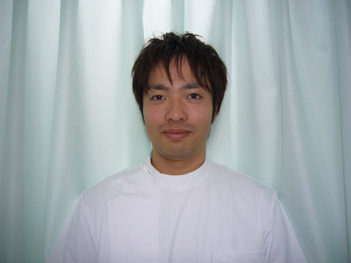

Photo01
Photo02
Photo03
当院では、明るくアットホームな雰囲気で 有名ミュージシャンやプロスポーツ選手の治療経験のある、 鍼師・灸師・あん摩マッサージ指圧師の国家資格を持つスタッフが、 赤ちゃんから高齢者までジャンルを問わず 様々な疾患・痛みに対しての治療を行なっています。 また、リラクゼーション目的のオイルマッサージなども行なっておりますので、 お気軽にお越し下さい。
| はり | 灸・吸角 | あん摩・マッサージ・指圧 | オイルマッサージ |
| リンパドレナージ | ヨモギ蒸し | 美顔鍼・小児鍼 | 適応症・禁忌症 |
|  | |
| 大江田美鈴 | 大江田淳一 |
|
鍼師・灸師・あん摩マッサージ指圧師 フェルディ式リンパドレナージセラピスト |
鍼師・灸師・あん摩マッサージ指圧師 フェルディ式リンパドレナージセラピスト 専門学校入学と同時に治療院にて見習い修行を始め、 整形外科・老人ホームへの勤務経験を経て、現在に至ります。 |
鍼治療で使用するハリは毛髪程度の太さで、注射針のように先端が尖ってなく、松葉の様に丸みをおびている為注射の時のような痛みはありません。
当院では、全て使い捨ての鍼を使用し、消毒も徹底していますのでご安心下さい。
清潔な治療着をご用意してありますので、手ぶらでいらして下さい。もちろん無料でお貸し致します。
なります。ご希望の方には領収書を発行致しますので、お気軽にお申し付け下さい。
申し訳ありませんがございません。施術後はタオルでの拭き取りのみとなります。
はい、出来ます。その際はそれぞれの時間分の料金を頂きます。
| 月 | 火 | 水 | 木 | 金 | 土 | 日 |
|---|---|---|---|---|---|---|
| 9:00-19:00 | 9:00-19:00 | 9:00-19:00 | 9:00-19:00 | 9:00-19:00 | 9:00-19:00 | 9:00-19:00 |
氏名・年齢・連絡先・詳しい症状・質問等をご記入のうえ、送信してください。 お問い合わせ頂いた方には、その後数日以内にご返答の連絡をさせて頂いております。 こちらからの返答が届かない場合は、正しく送信出来ていない可能性がございます。 その際は、お手数ですがお電話にてお問い合わせ下さい。